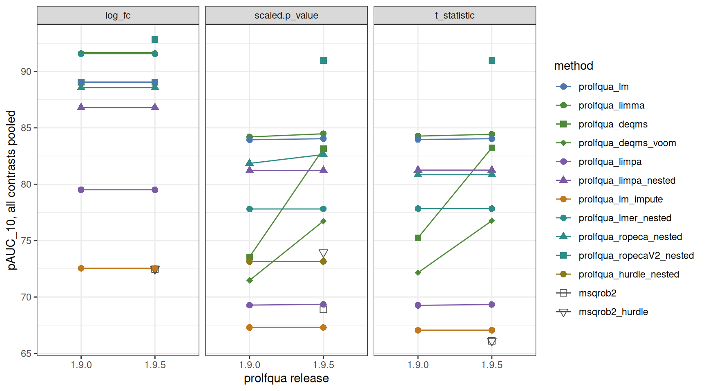
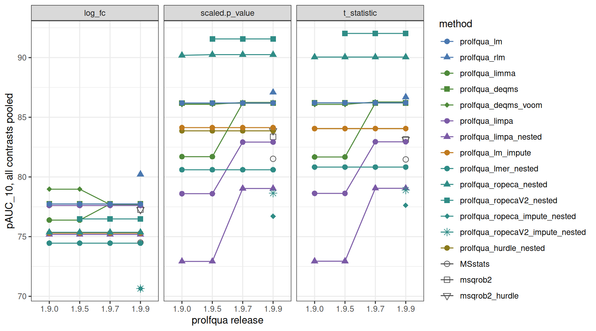
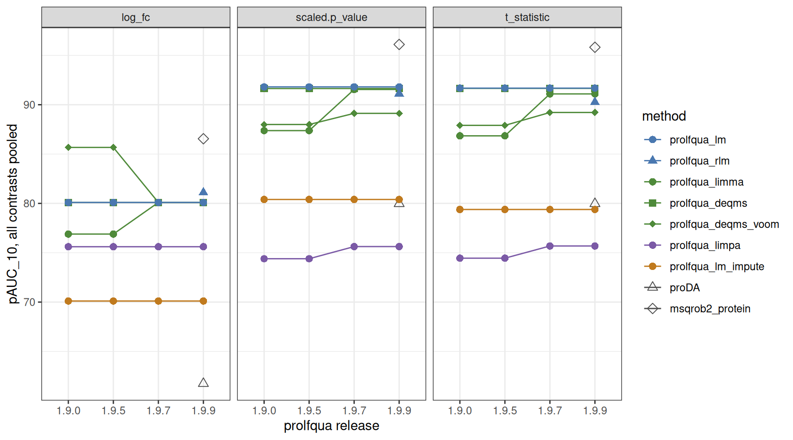
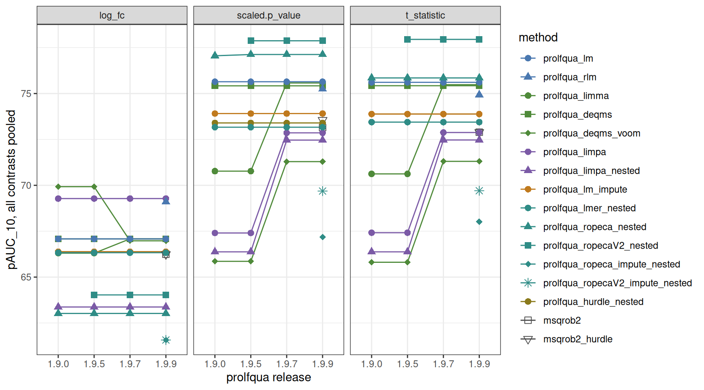
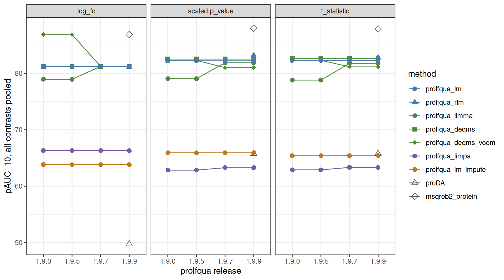
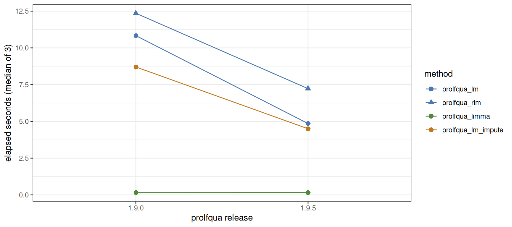
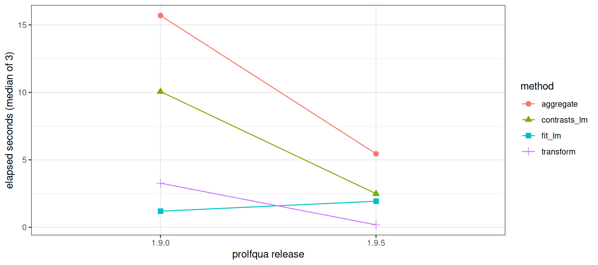

Benchmark scores across prolfqua releases
make score-history runs the benchmark pipeline (workflow/Snakefile) with the installed prolfqua and appends its scores and step timings to inst/extdata/score_history.tsv, one block of rows per prolfqua release. This page shows the partial AUC pAUC_10 per release; the file holds every score (AUC, pAUC_10, pAUC_20, AP, pAP_50, pAP_80), per contrast and for all contrasts pooled. The current results with ROC curves are in the vignette Benchmark_results.
- Releases: 1.9.0 (2026-11-02), 1.9.5 (2026-11-24), 1.9.7 (2026-11-25)
- pAUC_10: partial area under the ROC curve up to a false positive rate of 0.1, on a 0 to 100 scale, all contrasts of a dataset pooled; ranking by fold change (
log_fc), by p-value signed by the fold change (scaled.p_value) and by t statistic (t_statistic) - Encoding: colour is the model family of the prolfqua factory figure, point shape the model within its family; MSstats, proDA and msqrob2 are dark grey with open shapes. A model looks the same here and in
Benchmark_results -
tool_versionin the data: the software that fitted the model; MSstats, proDA and msqrob2 carry their own version, so their scores change with their releases, not with prolfqua’s - History starts with prolfqua 1.9.0 (commit
f4dfb7f3, 2026-11-02, before the rOpenSci self-review), rerun with the pipeline (make score-history-release V=1.9.0 PROLFQUA=f4dfb7f3 PROLFQUAPP=18914707); each tagged release adds a block: install it, thenmake score-history
pAUC_10 across releases
One figure and one table per dataset; the numbers of every release are in score_history.tsv. Lines join the releases of a prolfqua model; a model has no point at a release without its facade (prolfqua_ropecaV2_nested came with prolfqua 1.9.4). MSstats, proDA and msqrob2 are shown at their latest recorded run only.
CPTAC_MaxQuant
| model | release | log_fc | scaled.p_value | t_statistic |
|---|---|---|---|---|
| prolfqua_ropecaV2_nested | 1.9.7 | 92.8 | 91.0 | 91.0 |
| prolfqua_limma | 1.9.7 | 89.0 | 84.5 | 84.4 |
| prolfqua_lm | 1.9.7 | 89.0 | 84.0 | 84.0 |
| prolfqua_deqms | 1.9.7 | 89.0 | 83.1 | 83.2 |
| prolfqua_ropeca_nested | 1.9.7 | 88.6 | 82.6 | 80.9 |
| prolfqua_limpa_nested | 1.9.7 | 86.8 | 81.2 | 81.3 |
| prolfqua_lmer_nested | 1.9.7 | 91.6 | 77.8 | 77.8 |
| prolfqua_deqms_voom | 1.9.7 | 91.7 | 76.8 (+0.1) | 76.8 |
| msqrob2_hurdle (msqrob2 1.20.0) | 1.9.7 | 72.5 | 74.0 | 66.1 |
| prolfqua_hurdle_nested | 1.9.7 | 72.5 | 73.2 | 67.1 |
| prolfqua_limpa | 1.9.7 | 79.5 | 69.4 | 69.3 |
| msqrob2 1.20.0 | 1.9.7 | 72.5 | 68.9 | 66.1 |
| prolfqua_lm_impute | 1.9.7 | 72.5 | 67.3 | 67.1 |
IonStar_FragPipe_MSstats

| model | release | log_fc | scaled.p_value | t_statistic |
|---|---|---|---|---|
| prolfqua_ropecaV2_nested | 1.9.7 | 76.5 | 91.6 | 92.0 |
| prolfqua_ropeca_nested | 1.9.7 | 75.4 | 90.2 | 90.0 |
| prolfqua_deqms_voom | 1.9.7 | 77.7 (-1.3) | 86.2 (+0.2) | 86.3 (+0.2) |
| prolfqua_lm | 1.9.7 | 77.7 | 86.2 | 86.2 |
| prolfqua_limma | 1.9.7 | 77.7 (+1.4) | 86.2 (+4.5) | 86.2 (+4.5) |
| prolfqua_deqms | 1.9.7 | 77.7 | 86.2 | 86.2 |
| prolfqua_lm_impute | 1.9.7 | 75.3 | 84.1 | 84.1 |
| msqrob2_hurdle (msqrob2 1.20.0) | 1.9.7 | 77.3 | 83.9 | 83.1 |
| prolfqua_hurdle_nested | 1.9.7 | 75.3 | 83.9 | 84.1 |
| msqrob2 1.20.0 | 1.9.7 | 77.3 | 83.4 | 83.1 |
| prolfqua_limpa | 1.9.7 | 77.6 | 82.9 (+4.3) | 82.9 (+4.3) |
| MSstats 4.20.0 | 1.9.7 | 74.5 | 81.5 | 81.5 |
| prolfqua_lmer_nested | 1.9.7 | 74.5 | 80.6 | 80.8 |
| prolfqua_limpa_nested | 1.9.7 | 75.2 | 79.0 (+6.1) | 79.0 (+6.1) |
IonStar_FragPipe_protein

| model | release | log_fc | scaled.p_value | t_statistic |
|---|---|---|---|---|
| msqrob2_protein (msqrob2 1.20.0) | 1.9.7 | 86.6 | 96.1 | 95.8 |
| prolfqua_lm | 1.9.7 | 80.1 | 91.8 | 91.7 |
| prolfqua_deqms | 1.9.7 | 80.1 | 91.6 | 91.7 |
| prolfqua_limma | 1.9.7 | 80.1 (+3.2) | 91.5 (+4.2) | 91.1 (+4.2) |
| prolfqua_deqms_voom | 1.9.7 | 80.1 (-5.6) | 89.1 (+1.1) | 89.2 (+1.3) |
| prolfqua_lm_impute | 1.9.7 | 70.1 | 80.4 | 79.4 |
| proDA 1.26.0 | 1.9.7 | 61.7 | 80.0 | 80.0 |
| prolfqua_limpa | 1.9.7 | 75.6 | 75.6 (+1.2) | 75.7 (+1.2) |
IonStar_MaxQuant

| model | release | log_fc | scaled.p_value | t_statistic |
|---|---|---|---|---|
| prolfqua_ropecaV2_nested | 1.9.7 | 64.0 | 77.9 | 77.9 |
| prolfqua_ropeca_nested | 1.9.7 | 63.0 | 77.1 | 75.8 |
| prolfqua_lm | 1.9.7 | 67.1 | 75.6 | 75.6 |
| prolfqua_limma | 1.9.7 | 67.1 (+0.8) | 75.6 (+4.8) | 75.5 (+4.9) |
| prolfqua_deqms | 1.9.7 | 67.1 | 75.4 | 75.4 |
| prolfqua_lm_impute | 1.9.7 | 66.4 | 73.9 | 73.9 |
| msqrob2_hurdle (msqrob2 1.20.0) | 1.9.7 | 66.2 | 73.6 | 72.9 |
| prolfqua_hurdle_nested | 1.9.7 | 66.4 | 73.4 | 73.9 |
| prolfqua_lmer_nested | 1.9.7 | 66.3 | 73.2 | 73.4 |
| msqrob2 1.20.0 | 1.9.7 | 66.2 | 73.1 | 72.9 |
| prolfqua_limpa | 1.9.7 | 69.3 | 72.9 (+5.5) | 72.9 (+5.5) |
| prolfqua_limpa_nested | 1.9.7 | 63.4 | 72.5 (+6.1) | 72.5 (+6.1) |
| prolfqua_deqms_voom | 1.9.7 | 67.0 (-2.9) | 71.3 (+5.4) | 71.3 (+5.5) |
IonStar_MaxQuant_protein

| model | release | log_fc | scaled.p_value | t_statistic |
|---|---|---|---|---|
| msqrob2_protein (msqrob2 1.20.0) | 1.9.7 | 86.9 | 88.0 | 87.9 |
| prolfqua_deqms | 1.9.7 | 81.2 | 82.5 | 82.6 |
| prolfqua_lm | 1.9.7 | 81.2 | 82.2 | 82.3 |
| prolfqua_limma | 1.9.7 | 81.2 (+2.3) | 81.9 (+2.8) | 81.8 (+3.0) |
| prolfqua_deqms_voom | 1.9.7 | 81.2 (-5.6) | 81.0 (-1.3) | 81.1 (-1.2) |
| prolfqua_lm_impute | 1.9.7 | 63.8 | 65.9 | 65.4 |
| proDA 1.26.0 | 1.9.7 | 49.7 | 65.8 | 65.8 |
| prolfqua_limpa | 1.9.7 | 66.3 | 63.3 (+0.4) | 63.3 (+0.4) |
Timings
Median elapsed seconds over 3 repetitions, IonStar MaxQuant peptides, all proteins with at least 2 peptides. Timings compare only within one machine: R 4.6.2 aarch64-apple-darwin23.


| release | aggregate | contrasts_lm | facade_limma | facade_lm | facade_lm_impute | facade_rlm | fit_lm | transform |
|---|---|---|---|---|---|---|---|---|
| 1.9.0 | 15.70 | 10.06 | 0.16 | 10.83 | 8.70 | 12.35 | 1.19 | 3.27 |
| 1.9.5 | 5.45 | 2.49 | 0.16 | 4.85 | 4.50 | 7.23 | 1.93 | 0.18 |
| 1.9.7 | 5.11 | 2.64 | 0.26 | 4.61 | 4.47 | 6.91 | 1.78 | 0.17 |